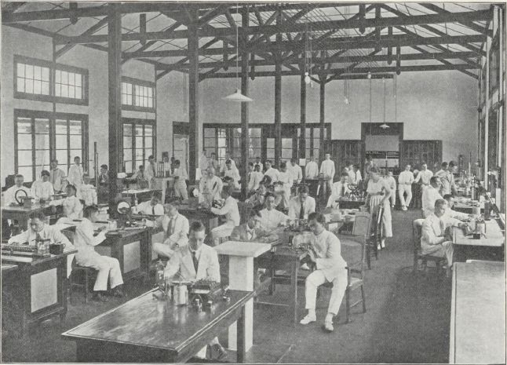
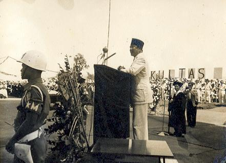

Sejarah ITB
Sejarah Pendidikan Tinggi Teknik di Indonesia berawal pada abad ke-20, ketika pemerintah kolonial Belanda mendirikan de Techniche Hoogeschool te Bandung (TH) pada 3 Juli 1920 di lahan seluas 30 hektar di Bandung. Saat itu hanya terdapat satu fakultas yaitu de Faculteit van Technische Wetenschap dan hanya satu jurusan yaitu de afdeeling der We gen Waterbouw. Pendirian perguruan tinggi ini dimaksudkan untuk memenuhi kebutuhan tenaga teknik yang semakin terbatas pada masa kolonial Belanda akibat pecahnya Perang Dunia pertama.

Sejak resmi dibuka untuk tahun kuliah 1920-1921, terdaftar 28 orang mahasiswa TH dengan hanya ada 2 orang Indonesia. Sementara itu, jumlah dosen pada permulaan tahun 1922 terdapat 12 orang Guru Besar. Empat tahun kemudian, pada tanggal 4 Juli 1924 dilepaslah insinyur yang pertama dari TH berjumlah 12 orang. Status TH dari saat pembukaan sampai tahun 1924 adalah bijzondere school yang kemudian berganti statusnya dari swasta menjadi instansi pemerintah.
Pada Dies ke-6 tanggal 3 Juli 1926, dari 22 orang kandidat insinyur yang lulus berjumlah 19 orang dengan 4 orang di antaranya adalah pribumi. Saat itulah untuk pertama kalinya TH Bandung menghasilkan nsinyur orang Indonesia. Satu dari keempat orang itu adalah Ir. R Soekarno yang kelak menjadi proklamator sekaligus presiden pertama Republik Indonesia.

Kemudian saat pendudukan Jepang pada 1944-1945, TH berubah nama menjadi Bandung Kogyo Daigaku (BKD) dan menjadi Sekolah Tinggi Teknik (STT) Bandung setelah Indonesia merdeka. Selanjutnya pada 1946, sempat berpindah ke Yogyakarta dengan sebutan STT Bandung di Jogja yang kemudian menjadi Universitas Gadjah Mada (UGM). Pada 21 Juni 1946, terjadi perubahan nama menjadi Universiteit van Indonesie di bawah kendali NICA dengan Faculteit van Technische Wetenschap dan Faculteit van Exacte Wetenschap berdiri kemudian. Setelah itu pada 1950-1959 menjadi bagian dari Universitas Indonesia untuk Fakultas Teknik dan Fakultas Ilmu Pasti dan Ilmu Alam.
Didorong oleh gagasan dan keyakinan yang dilandasi semangat perjuangan proklamasi kemerdekaan serta wawasan ke masa depan, Pemerintah Indonesia meresmikan berdirinya Institut Teknologi Bandung pada tanggal 2 Maret 1959. Berbeda dengan harkat pendirian lima perguruan tinggi teknik sebelumnya di kampus yang sama, Institut Teknologi Bandung lahir dalam suasana penuh dinamika mengemban misi pengabdian ilmu pengetahuan dan teknologi, yang berpijak pada kehidupan nyata di bumi sendiri bagi kehidupan dan pembangunan bangsa yang maju dan bermartabat.

Kurun dasawarsa pertama tahun 1960-an,ITB mulai membina dan melengkapi dirinya dengan kepranataan yang harus diadakan. Dalam periode ini dilakukan persiapan pengisian-pengisian organisasi bidang pendidikan dan pengajaran, serta melengkapi jumlah dan meningkatkan kemampuan tenaga pengajar dengan penugasan belajar ke luar negeri.
Kurun dasawarsa kedua tahun 1970-an,ITB diwarnai oleh masa sulit yang timbul menjelang periode pertama. Satuan akademis yang telah dibentuk berubah menjadi satuan kerja yang juga berfungsi sebagai satuan sosial-ekonomi yang secara terbatas menjadi institusi semi-otonomi. Tingkat keakademikan makin meningkat, tetapi penugasan belajar ke luar negeri semakin berkurang. Sarana internal dan kepranataan semakin dimanfaatkan.
Kurun dasawarsa ketiga tahun 1980-an,ditandai dengan kepranataan dan proses belajar mengajar yang mulai memasuki era modern dengan sarana fisik kampus yang semakin dilengkapi. Jumlah lulusan sarjanameningkat dan program pascasarjana mulai dibuka. Keadaan ini didukung oleh membaiknya kondisi sosio-politik dan ekonomi negara.
Kurun dasawarsa keempat tahun 1990-an,perguruan tinggi teknik yang semula hanya mempunyai satu jurusan pendidikan, kini memiliki 26 Departemen Program Sarjana, termasuk Departemen Sosioteknologi, 34 Program Studi S2/Magister dan 3Bidang Studi S3/Doktor yang mencakup unsur-unsur ilmu pengetahuan, teknologi, seni, bisnis, dan ilmu-ilmu kemanusiaan.
Dasawarsa ini menghantarkan ITB ke fajar abad baru yang ditandai dengan munculnya berbagai gagasan serta pemikiran terbaik untuk pengembangannya. Beberapa di antaranya antara lain:
- Bahwa cepatnya pelipatgandaan informasi di abad baru akan menuntut pelaksanaan pendidikan yang berpercepatan, tepat waktu, terpadu, berkelanjutan, dan merupakan upaya investasi terbaik. Dalam upaya ini ITB ingin menegakkan program sarjana di atas pondasi penguasaan ilmu-ilmu dasar yang kokoh sehingga lulusannya senantiasa mampu menyesuaikan diri terhadap perubahan-perubahan yang datang dengan cepat. Program pascasarjana menjadi ujung tombak peningkatan kualitas dan kuantitas, efisiensi dan efektivitas, serta relevansinya terhadap kebutuhan, sehingga kontribusi ITB bagi pembangunan nasional akan menjadi lebih besar dan tinggi nilainya.
- Bahwa penguasaan dan pengembangan ilmu pengetahuan dan teknologi perlu dilakukan secara utuh dan terpadu, dalam suatu kiprah sebagai research and development university. Pengembangan keilmuan dan teknologi di ITB didasarkan pada kebutuhan untuk menunjang pelaksanaan pembangunan bangsa. Dengan demikian ITB akan mengembangkan dirinya dalam riset dan manufaktur, teknologi komunikasi dan informasi, transportasi darat-laut dan dirgantara, lingkungan, serta bio-teknologi dan biosains.
- Bahwa misi pengabdian kepada masyarakat diharapkan dapat membangun wawasan bisnis untuk kemandirian yang merupakan modal awal untuk menegakkan otonomi perguruan tinggi. Wawasan bisnis untuk kemandirian tersebut diarahkan guna meraih prestasi pelaksanaan kewajiban dan tugas pendidikan dan penelitian setinggi-tingginya.
- Bahwa pengembangan ITB diharapkan berpijak pada kekuatan institusi berupa penggunaan informasi sebaik-baiknya, terpeliharanya staf pengajar yang kompeten, tinggi mutu kemampuan dan pengabdiannya, sistem pendidikan yang terintegrasi, dan kerja sama yang terjalin erat dengan pemerintah, industri dan lembaga penelitian dan pendidikan di dalam dan luar negeri. Sehingga pengembangan yang direncanakan dapat dipantau secara berkelanjutan dan terukur menurut pelaksanaan tridarma perguruan tinggi, pengembangan sumber daya manusia, sarana fisik, kepranataan norma dan tata kerja, serta ekonomi, sosial budaya dan keamanan.
- Bahwa keinginan untuk mengembangkan ITB tercermin dalam semangat dan sikap ITB yang mengakui adanya kebenaran keilmuan yang dapat didekati melalui observasi disertai analisis yang rasional. Bahwasanya mengejar dan mencari kebenaran ilmiah tersebut adalah hak setiap insan di bumi, dan ilmu pengetahuan serta teknologi agar dimanfaatkan sebesar-besarnya untuk menyejahterakan umat manusia, dan bangsa Indonesia pada khususnya.
Kurun dasawarsa kelima tahun 2000-an, pada tanggal 26 Desember 2000, pemerintah melalui Peraturan Pemerintah No. 155 tahun 2000 telah menetapkan Institut Teknologi Bandung sebagai suatu Badan Hukum Milik Negara (BHMN).
Perguruan Tinggi Negeri dengan status badan hukum adalah sesuatu tanpa preseden dalam sejarah Pendidikan Tinggi di Indonesia. Hal ini diawali dengan terbitnya PP No. 61 tahun 1999 tentang Penetapan Perguruan Tinggi Negeri sebagai Bahan Hukum yang kemudian disusul diterbitnya PP No. 155 tahun 2000 tentang Penetapan Institut Teknologi Bandung menjadi Bahan Hukum Milik Negara. Maka dengan terbitnya PP 155 tersebut, sejak tanggal 26 Desember 2000, ITB resmi menjadi badan hukum sebagaimana layaknya badan hukum lainnya yang dibenarkan melaksanakan segala perbuatan hukum yang tidak melanggar hukum serta peraturan perundang-undangan yang berlaku. Pertimbangan pertama yang ditinjau dalam PP No. 61 secara singkat adalah adanya globalisasi yang menimbulkan persaingan yang tajam. Maka untuk meningkatkan daya saing nasional dibutuhkan perguruan tinggi yang dapat membangun masyarakat madani yang demokratis dan mampu bersaing secara global. Untuk itu perguruan tinggi, termasuk ITB, harus memperoleh kemandirian, otonomi, dan tanggung jawab yang lebih besar. Penekannya ada pada proses globalisasi.
Institut Teknologi Bandung (ITB), berdiri secara de facto pada 3 Juli 1920, telah menjadi tonggak sejarah dalam pendidikan tinggi di Indonesia. Dalam perjalanan seratus tahunnya, ITB telah menghasilkan lebih dari 120.000 alumni yang memegang peranan krusial dalam pembangunan bangsa.
Pada tahun 2024, ITB berkembang menjadi lembaga pendidikan unggulan dengan 12 Fakultas/Sekolah, 1 Sekolah Pascasarjana, 178 program studi, dan 114 Kelompok Keahlian. Dalam dunia riset, ITB menonjol dengan memiliki 25 Pusat, 7 Pusat Penelitian, dan 6 Pusat Unggulan Iptek (PUI).
Komunitas akademik ITB terdiri dari lebih dari 28 ribu mahasiswa program sarjana, magister, dan doktoral, didukung oleh lebih dari 1200 dosen, termasuk 237 Guru Besar. ITB tidak hanya hadir di Kampus Ganesha (kampus utama), tetapi juga di Kampus Jatinangor, Kampus Cirebon, dan Kampus Jakarta.
Prestasi ITB tercermin dalam akreditasi yang diperolehnya dari Badan Akreditasi Nasional-Perguruan Tinggi (BAN-PT), dengan status "A" untuk tingkat universitas dan sejumlah program studi yang terakreditasi baik hingga unggul. Pengakuan internasional juga diperoleh melalui akreditasi dari lembaga-lembaga ternama seperti ABET, ASIIN, AACSB, KAAB, RSC, dan IABEE.
Posisi ITB di kancah global terus mengalami kenaikan, dengan peringkat ke-281 dalam QS World University Ranking 2024 dan peringkat ke-74 dalam Asian University Ranking 2024.
ITB tidak hanya menjadi pusat pendidikan dan riset yang unggul, tetapi juga berkomitmen untuk menjadi mitra dalam pembangunan masyarakat dan negara, dengan visi dan misi yang kuat dalam memajukan bangsa melalui pendidikan, riset, dan pengabdian kepada masyarakat.
Tugas dan Fungsi
Tugas
Sesuai Peraturan Menteri Pendidikan, Kebudayaan, Riset, dan Teknologi No. 28 Tahun 2021, Institut Teknologi Bandung mempunyai tugas:
"Memajukan, menyebarluaskan dan mengembangkan ilmu pengetahuan, teknologi, seni, ilmu sosial, dan ilmu humaniora untuk mencerdaskan kehidupan bangsa sejalan dengan dinamika masyarakat Indonesia serta masyarakat dunia, dengan tetap menjunjung tinggi nilai-nilai kemanusiaan, sosial, dan lingkungan melalui kegiatan tridharma."
Fungsi
1. Menyelenggarakan kegiatan tridharma dan kegiatan lainnya secara terintegrasi, harmonis, dan berkelanjutan baik di dalam maupun di luar domisili ITB;
2. Menyelenggarakan kegiatan pendidikan yang bermutu dalam bidang ilmu pengetahuan, teknologi, seni, ilmu sosial, dan ilmu humaniora dalam rangka menghasilkan sumber daya insani yang kompeten, inovatif, kreatif, amanah, berbudi luhur, dan berakhlak mulia;
3. Menyelenggarakan penelitian yang berkualitas dengan menjunjung tinggi moral dan etika akademik serta hak atas kekayaan intelektual untuk berkontribusi secara aktif dalam pengembangan ilmu pengetahuan, teknologi, seni, ilmu sosial, dan ilmu humaniora, membangun keilmuan baru, serta melayani kebutuhan pembangunan nasional dan masyarakat luas;
4. Menyelenggarakan kegiatan pengabridan kepada masyarakat yang bermutu dan bermakna guna menggali dan membangun nilai serta potensi masyarakat dan lingkungan sekitarnya dalam berbagai aspek kehidupan;
5. Menjalin kerja sama dengan berbagai pihak sesuai dengan jati diri dan mandatnya untuk kemaslahatan umat manusia serta kesejahteraan dan keluhuran martabat bangsa.